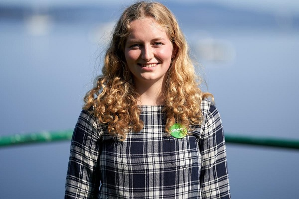

Barely Legal NPC Runs for
CBC:
TDC_ARTICLE_START
Kate O'Connor envisions a greener future for B.C., and she's not going to wait for someone else to make it happen.
Having just turned 18 years old, the Green Party candidate for Saanich South is the youngest candidate in provincial history. Stepping into politics is a move that makes sense to her, considering decisions made today will affect her generation's future.
"Running a young candidate gets young people involved," she said.
"We need a diversity of perspectives including the youth perspective if we are going to make the best possible decisions for all British Columbians."
O'Connor is running a platform focused on climate change action, the affordability crisis, food insecurity and better mental health care. She wants to see the legal voting age lowered to the age of 16 and access to universal childcare.
In Saanich South, she'll be running against the NDP incumbent Lana Popham who served as minister of agriculture until the election was called this fall. An NDP candidate has been elected in the riding in the last four elections. The B.C. Liberal candidate in the riding is Rishi Sharma.
TDC_ARTICLE_STOP
Heeyyyyyyyyy kiidddddssssssssss. Do you know what’s cool? Supporting Global Warming Catastrophism is cool! Focusing on better mental health care in a really vague way is COOL! Focusing on “the affordability crisis,” without mentioning migration, or being too negative on those rich oppressed capitalists IS COOL! Separating pre-schoolers from their parents is KEWL! You should be Kewl like Kate O’Connor.
You know what’s not Kewl? Making lists of the war propagandists who lied us into Iraq or Afghanistan. You know what’s not Kewl? Putting an end to racial discrimination against white people. You know what’s not cool? Pointing out that zionist jews have made it illegal for the goyim to fact check their fake lampshade-o-caust, while denying actual genocides they have committed. You know what’s not cool? Advocating for working class people who have their jobs and livelihoods destroyed by mass migration, outsourcing, or financial speculation is VERY MUCH NOT COOL. Radical Kate O’ Connor, mega-cool girl is not a fan of any of those things.
TDC_ARTICLE_START
O'Connor grew up in a household where politics and current events were regularly discussed, she said, but she became interested in getting involved in politics after U.S. President Donald Trump was elected in 2016.
She realized what a "huge effect" that had on the world and noticed something was missing in the political landscape: young people.
TDC_ARTICLE_STOP
Um, yeah no. Young people were instrumental in getting Donald the Fraud elected. Where the fuck were you back in 2015-16? People under the age of 30, including many teenagers, were absolutely 100% the energy that Gorland Blormp the Orange Retard Zionist used to get elected, before doing absolutely nothing for us. And the reason that young people aren’t involved in “politics,” is because the politics on offer is so obviously fake and gay, and utterly controlled. I’m going to get young people back into politics, and it doesn’t involve shilling for the Green Party Donor's agenda.
TDC_ARTICLE_START
O'Connor began volunteering with the Green Party, most recently with leader Sonia Furstenau's campaign this past summer.
She found her place in a party focused on "collaborative leadership" and that has a sense of urgency when it comes to addressing the impacts of climate change, she said.
"There's this cycle where young people are criticized and blamed for not being involved in politics and engaged in politics, and then when they stand up and try to be more involved in politics, they're told that they're too young and they're not serious," O'Connor said.
"I'm trying to break that cycle."
She thinks it's working — O'Connor says she's hearing from young people who haven't followed or engaged in politics before because they didn't feel their concerns were represented.
TDC_ARTICLE_STOP
Yeah, I hear that too. Or rather, I actually hear that. I’d be genuinely shocked if there are any serious percentage of young people genuinely concerned about Global Wahming Catastrophism. The only young people who might be involved with shit like this are the absolute privileged upper middle class striver shitbags that absolutely fucking nobody likes.
Go ask some normal young person what they feel is important to them, and they’ll say things like “I’d like to have half the economic opportunities that Boomers had,” or “I’d like this anti-white put in jail for hate speech,” or “I want the kikes and treasonous politicians who lied us into the Middle East to be publicly humiliated and then executed while begging for their lives,” or “I don’t want these mentally ill men (trannies) in my bathroom,” or “I want the ADL internet censorship destroyed and the ADL put in jail.” It's a long list, but this ain't it.
TDC_ARTICLE_START
Her platform focus isn't exclusively on young people, but on issues that impact everyone in B.C., she added.
"People are often surprised and underestimate me, I think especially because I'm a young woman," O'Connor said.
"But when I start talking to them, I think they're surprised at how I'm able to convey my ideas and how they can see that I'm really passionate about what I'm doing, and that I care about youth representation but I also care about other issues as well."
TDC_ARTICLE_STOP
I am wahmen hear me roar.
And to think, some people are invested in current electoral politics.